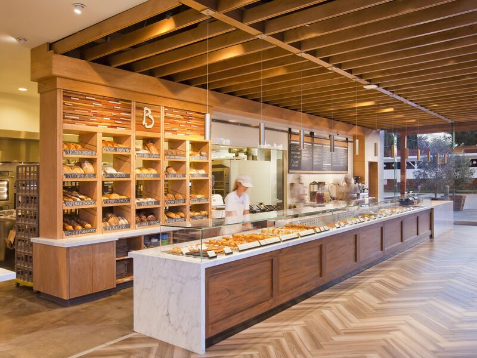

Thabo Nkosi
Founder and head baker
Started Sweet Crumbs from his family kitchen and still bakes the first batch every morning.
Sweet Crumbs Bakery is a small, family-run bakery that creates fresh, delicious and beautifully prepared baked goods for every kind of celebration.
Sweet Crumbs began in a home kitchen in Pretoria with one oven, a family recipe for vanilla sponge and a lot of birthday orders from friends. Word spread quickly, and in 2018 we opened our first shop on Pretorius Street.
In 2023 we opened our second branch in Hatfield, with a coffee bar and seating for students and families. Every cake, cupcake and pastry is still made by hand, in small batches, by our own team of bakers.

To provide fresh, tasty and high-quality baked goods while creating a warm and enjoyable experience for every customer who walks through our doors or orders online.
To become Pretoria's most trusted local bakery, known for delicious products, creativity and excellent customer service, and to be the first name people think of for every celebration.
Founder and head baker
Started Sweet Crumbs from his family kitchen and still bakes the first batch every morning.
Cake designer
Turns your ideas into celebration cakes, from simple buttercream to tiered wedding cakes.
Pastry chef
Looks after our tarts, pastries and loaves, and is responsible for the famous custard tarts.
Customer experience
Manages orders and deliveries and makes sure every customer leaves with a smile.
Select a photo to view it larger.
Whole celebration cakes need at least 3 days' notice. Cupcakes, pastries and other treats need 1 day, and orders of more than 24 items need one extra day.
Yes. We deliver anywhere in Pretoria between 09:00 and 13:00 from Monday to Saturday. Delivery costs R65 and is free on orders over R500.
We offer egg-free and dairy-free sponges on request. Our kitchen handles nuts, gluten and dairy, so we cannot guarantee that any product is completely allergen-free.
Once we confirm your enquiry we send an invoice by email. A 50% deposit by EFT secures custom cakes, and the balance is paid on collection or delivery.
Orders of R1,000 or more automatically receive 10% off. Use our enquiry form to see your price instantly.
Visit us in Pretoria Central or Hatfield, or send us a message.